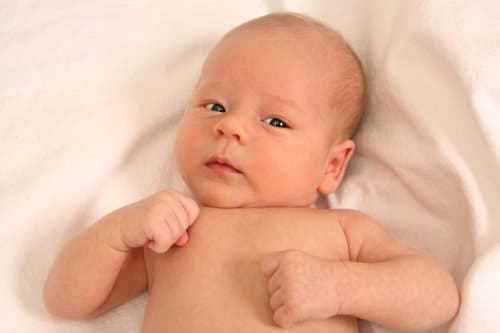
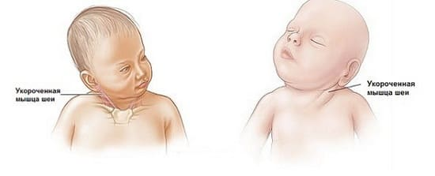
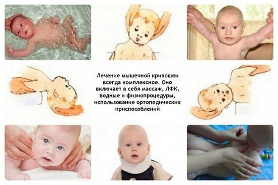
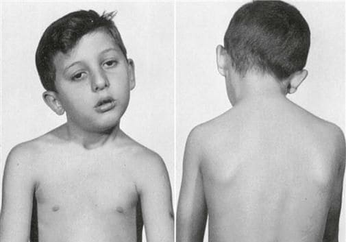

Кривошея — это нарушение развития, спазм грудино-ключично-сосцевидной (ГКС) мышцы. Эта большая мышца тянется от
черепа сзади уха вниз вдоль шеи к суставу между ключицей и грудиной. Это главная мышца, ответственная за наклоны и повороты головой.
ПРИЗНАКИ
Врачи часто замечают искривление шеи при первом осмотре ребенка. Но родителям важно знать признаки, чтобы они могли указать врачу на них. Основной признак — когда ребенок держит голову наклоненной к плечу в ту сторону, где спазмирована (укорочена) мышца.
ПРИЧИНА
Считается, что кривошея развивается вследствие травмы грудино- ключично-сосцевидной мышцы. Поврежденная мышца спазмируется, становится плотнее, короче и оттягивает затылок в свою сторону. Когда-то считалось, что травма происходит в результате необычного положения, которое ребенок может принять в утробе. Возможно, ребенок был определенным образом перекручен или на ГКС мышцу было оказано неравномерное давление.
У детей с кривошеей более высокий риск развития других позиционных проблем, таких как повернутые вовнутрь стопы и смещение бедра. Еще одной вероятной причиной может быть растяжение мышцы во время родов, наподобие растяжения связок. При этом возможно кровоизлияние в поврежденную мышцу, которое прорастает волокнистой соединительной тканью, способствуя уплотнению и укорочению мышцы и образованию характерного комочка, который часто можно нащупать на шее. Укороченная мышца спазмируется, и задняя часть шеи оттягивается к одному плечу, а подбородок поворачивается к другому.

КАК ОПРЕДЕЛИТЬ И ЧТО ДЕЛАТЬ
Некоторые дети просто любят поворачивать шею в какую-либо сторону, но при кривошее младенец всегда поворачивает шею в одну и ту же сторону, и голова не просто повернута, а наклонена. Укороченная мышца с поврежденной стороны становится тверже на ощупь, как при судороге, а попытавшись повернуть голову ребенка в другую сторону, вы сталкиваетесь с большим сопротивлением.
Расскажите о своем беспокойстве врачу, который осмотрит не только шею ребенка для подтверждения диагноза, но проверит и на наличие других позиционных особенностей, например бедер, икр и ступней.
ЛЕЧЕНИЕ
Поскольку проблема заключается в зажатой, ригидной мышце, лечение заключается в постепенной растяжке ее. Ваш врач покажет вам, как делать два типа упражнений: когда вы будете растягивать мышцы шеи вашего ребенка и когда ребенок сам должен их растягивать. Попробуйте научить ребенка использовать более слабые мышцы с помощью таких методов:
СОВЕТ ДОКТОРОВ СИРС: РЕБЕНОК НАКЛОНЯЕТ ГОЛОВУ? ОБРАТИТЕСЬ К ВРАЧУ Наклоненная голова у младенцев постарше или у малышей после года может означать, что ребенок поворачивает голову, чтобы приспособиться к проблемам со зрением, например, к ленивому глазу. |

СОВЕТ ДОКТОРОВ СИРС: КАК ЛУЧШЕ ВСЕГО ИСПОЛЬЗОВАТЬ СПЕЦИАЛИСТОВ ЛФК В нашей педиатрической практике мы часто прибегаем к услугам специалистов ЛФК, и вот что мы узнали. Необходимость ходить на ЛФК 1—2 раза в неделю на протяжении многих месяцев становится препятствием. При большинстве недугов, но не при всех, обращайтесь к специалисту ЛФК в первую очередь как к консультанту. Посетите его несколько раз и попросите его научить вас, как делать упражнения дома. Таким образом, вы можете потратить время, которое у вас занимает дорога, на дополнительный сеанс домашней ЛФК, и вы можете применять ее, когда ребенок в подходящем настроении. Растягивание мышц расстроенного ребенка с полностью зажатым телом не даст хорошего результата. Иногда вам придется быть довольно настойчивым, например, скажите: «Поездка дается моему ребенку так тяжело. Можем ли мы пройти лишь несколько сеансов, и вы покажете мне, как выполнять упражнения дома?» Правильными будут и домашняя ЛФК, и регулярный осмотр у специалиста для определения изменений. |
Поскольку голова после упражнений на растяжку всегда возвращается в начальное положение, попытайтесь делать их так часто, как только можете, как часть ежедневной игры с ребенком. Растяжку от плеча к плечу выполняйте по крайней мере после каждой замены подгузников.
Ваш врач может направить вас к специалисту по лечебной физкультуре, который покажет вам упражнения для растяжки грудино-ключично-сосцевидной мышцы. Возможно, вы предпочтете, чтобы растяжкой ригидной мышцы вашего ребенка в основном занимался специалист по лечебной физкультуре, но мы всегда учили родителей выполнять растяжку от плеча к плечу так, чтобы тянулись обе шейные мышцы. Вкратце лечебная физкультура направлена на оттягивание головы и шеи от места прикрепления мышцы. Мышца тянет голову набок, вниз и немного поворачивает шею на противоположную сторону. Ваши упражнения на растяжку, напротив, поворачивают голову в поврежденную сторону и вверх.
У большинства детей движения шеей полностью восстанавливаются в течение 3—6 месяцев применения лечебной физкультуры, и зачастую улучшение наблюдается уже через несколько недель. Если искривление замечено в первые два месяца жизни, оно, как правило, полностью корректируется к 1 году, при условии, что лечебные упражнения выполняются регулярно. Если, несмотря на усердные занятия лечебной физкультурой, проблема не проходит после года, ваш врач может предложить вам другие методы лечения, например, хирургическую коррекцию. Иногда хирургическое вмешательство применяется для того, чтобы удлинить поврежденную группу мышц. Это необходимо только в небольшом количестве случаев кривошеи.
КРИВОШЕЯ У ДЕТЕЙ СТАРШЕГО ВОЗРАСТА
Кривошея, которая развивается в первые несколько недель или месяцев жизни, называется врожденной кривошеей, поскольку считается, что она вызвано травмой грудино-ключично-сосцевидной мышцы до или во время рождения. Приобретенная кривошея встречается у детей старшего возраста как следствие повреждения мышцы или воспаления окружающих ее тканей. Одной из самых распространенных причин является воспаление лимфоузлов вдоль мышцы, при вирусной инфекции или ангине. При этом типе кривошеи голова наклонена в противоположную от поврежденной сторону, и ребенок испытывает боль в мышце. Когда он поворачивается в здоровую сторону, боль уменьшается.
Такая кривошея, как правило, проходит самостоятельно, когда вылечена болезнь, послужившая первопричиной. Иногда влажный теплый компресс помогает облегчить боль в пораженной мышце. В данной ситуации лучше не пытаться растянуть воспаленную мышцу.

Здоровье ребенка от докторов Сирс / Сирс У. и др.